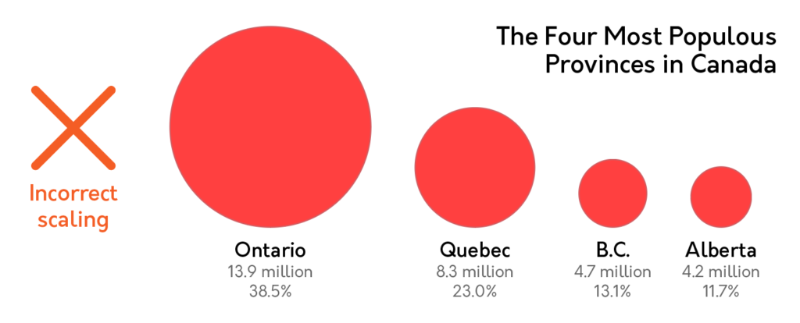
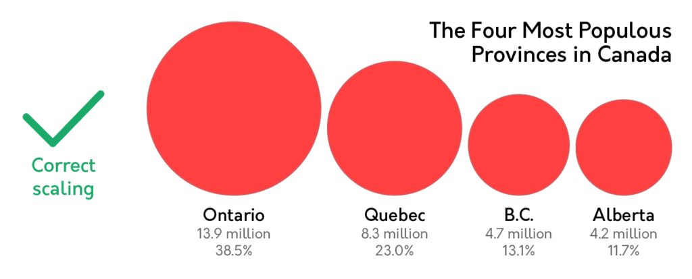
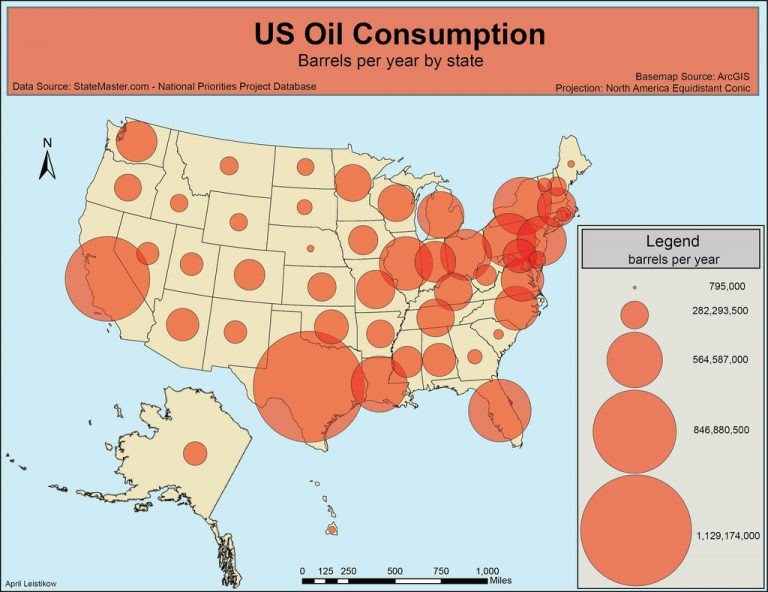

Common Thematic Map Mistakes
- Incorrectly scaling circles. Amateur designers wishing to express area with circles may attempt to double the area
of a circle by doubling its diameter. This is incorrect, and actually quadruples the area of a circle. For a succint example,
check out this visualization I found on google images.


- Cluttered symbol placement.While proportional symbol maps can be useful, one should be careful not to make the circles
too big, which would clutter the map too much. For an example, see the picture below. That's ugly and I'm having trouble which
circle belongs to which state. To make this better, scale down the symbols (in this case, circles).
